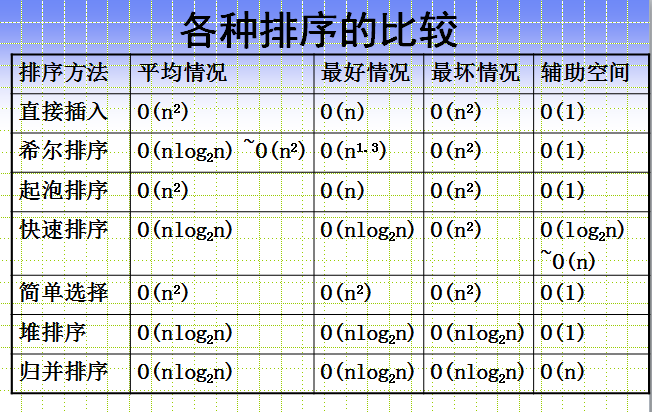

说说严格模式的限制
严格模式主要有以下限制：
变量必须声明后再使用 函数的参数不能有同名属性，否则报错 不能使用with语句 不能对只读属性赋值，否则报错 不能使用前缀0表示八进制数，否则报错 不能删除不可删除的属性，否则报错 不能删除变量delete prop，会报错，只能删除属性delete global[prop] eval不会在它的外层作用域引入变量 eval和arguments不能被重新赋值 arguments不会自动反映函数参数的变化 不能使用arguments.callee 不能使用arguments.caller 禁止this指向全局对象 不能使用fn.caller和fn.arguments获取函数调用的堆栈 增加了保留字（比如protected、static和interface）
设立”严格模式”的目的，主要有以下几个：
- 消除
Javascript语法的一些不合理、不严谨之处，减少一些怪异行为; - 消除代码运行的一些不安全之处，保证代码运行的安全；
- 提高编译器效率，增加运行速度；
- 为未来新版本的
Javascript做好铺垫。
注：经过测试IE6,7,8,9均不支持严格模式。
具体：
不能通过脚本访问argument.callee
外部访问不到eval()中创建的任何变量和函数，为eval()赋值会导致错误
DOM元素e的e.getAttribute(propName)和e.propName有什么区别和联系
- e.getAttribute()，是标准DOM操作文档元素属性的方法，具有通用性可在任意文档上使用，返回元素在源文件中设置的属性
- e.propName通常是在HTML文档中访问特定元素的特性，浏览器解析元素后生成对应对象（如a标签生成HTMLAnchorElement），这些对象的特性会根据特定规则结合属性设置得到，对于没有对应特性的属性，只能使用getAttribute进行访问
- e.getAttribute()返回值是源文件中设置的值，类型是字符串或者null（有的实现返回””）
- e.propName返回值可能是字符串、布尔值、对象、undefined等
- 大部分attribute与property是一一对应关系，修改其中一个会影响另一个，如id，title等属性
- 一些布尔属性
<input hidden/>的检测设置需要hasAttribute和removeAttribute来完成，或者设置对应property - 像
<a href="../index.html">link</a>中href属性，转换成property的时候需要通过转换得到完整URL - 一些attribute和property不是一一对应如：form控件中
<input value="hello"/>对应的是defaultValue，修改或设置value property修改的是控件当前值，setAttribute修改value属性不会改变value property
offsetWidth/offsetHeight,clientWidth/clientHeight与scrollWidth/scrollHeight的区别
- offsetWidth/offsetHeight返回值包含content + padding + border，效果与e.getBoundingClientRect()相同
- clientWidth/clientHeight返回值只包含content + padding，如果有滚动条，也不包含滚动条
- scrollWidth/scrollHeight返回值包含content + padding + 溢出内容的尺寸
Measuring Element Dimension and Location with CSSOM in Windows Internet Explorer 9.aspx)

XMLHttpRequest通用属性和方法
readyState:表示请求状态的整数，取值：- UNSENT（0）：对象已创建
- OPENED（1）：open()成功调用，在这个状态下，可以为xhr设置请求头，或者使用send()发送请求
- HEADERS_RECEIVED(2)：所有重定向已经自动完成访问，并且最终响应的HTTP头已经收到
- LOADING(3)：响应体正在接收
- DONE(4)：数据传输完成或者传输产生错误
onreadystatechange：readyState改变时调用的函数status：服务器返回的HTTP状态码（如，200， 404）statusText:服务器返回的HTTP状态信息（如，OK，No Content）responseText:作为字符串形式的来自服务器的完整响应responseXML: Document对象，表示服务器的响应解析成的XML文档abort():取消异步HTTP请求getAllResponseHeaders(): 返回一个字符串，包含响应中服务器发送的全部HTTP报头。每个报头都是一个用冒号分隔开的名/值对，并且使用一个回车/换行来分隔报头行getResponseHeader(headerName):返回headName对应的报头值open(method, url, asynchronous [, user, password]):初始化准备发送到服务器上的请求。method是HTTP方法，不区分大小写；url是请求发送的相对或绝对URL；asynchronous表示请求是否异步；user和password提供身份验证setRequestHeader(name, value):设置HTTP报头send(body):对服务器请求进行初始化。参数body包含请求的主体部分，对于POST请求为键值对字符串；对于GET请求，为null
focus/blur与focusin/focusout的区别与联系
- focus/blur不冒泡，focusin/focusout冒泡
- focus/blur兼容性好，focusin/focusout在除FireFox外的浏览器下都保持良好兼容性，如需使用事件托管，可考虑在FireFox下使用事件捕获elem.addEventListener(‘focus’, handler, true)
- 可获得焦点的元素：
- window
- 链接被点击或键盘操作
- 表单空间被点击或键盘操作
- 设置
tabindex属性的元素被点击或键盘操作
mouseover/mouseout与mouseenter/mouseleave的区别与联系
- mouseover/mouseout是标准事件，所有浏览器都支持；mouseenter/mouseleave是IE5.5引入的特有事件后来被DOM3标准采纳，现代标准浏览器也支持
- mouseover/mouseout是冒泡事件；mouseenter/mouseleave不冒泡。需要为多个元素监听鼠标移入/出事件时，推荐mouseover/mouseout托管，提高性能
- 标准事件模型中event.target表示发生移入/出的元素,vent.relatedTarget对应移出/如元素；在老IE中event.srcElement表示发生移入/出的元素，event.toElement表示移出的目标元素，event.fromElement表示移入时的来源元素
例子：鼠标从div#target元素移出时进行处理，判断逻辑如下：
|
|
sessionStorage,localStorage,cookie区别
- 都会在浏览器端保存，有大小限制，同源限制
- cookie是网站为了标示用户身份而储存在用户本地终端（Client Side）上的数据（通常经过加密）。cookie数据始终在同源的http请求中携带（即使不需要），会在浏览器和服务器间来回传递。cookie会在请求时发送到服务器，作为会话标识，服务器可修改cookie；web storage不会发送到服务器,sessionStorage和localStorage不会自动把数据发给服务器，仅在本地保存。
- cookie有path概念，子路径可以访问父路径cookie，父路径不能访问子路径cookie
- 有效期：cookie在设置的有效期内有效，默认为浏览器关闭；sessionStorage在窗口关闭前有效，localStorage长期有效，直到用户删除
- 共享：sessionStorage不能共享，localStorage在同源文档之间共享，cookie在同源且符合path规则的文档之间共享
- localStorage的修改会促发其他文档窗口的update事件
- cookie有secure属性要求HTTPS传输
- 存储大小：浏览器不能保存超过300个cookie，单个服务器不能超过20个，每个cookie不能超过4k。web storage大小支持能达到5M
javascript跨域通信
同源：两个文档同源需满足
- 协议相同
- 域名相同
- 端口相同
跨域通信：js进行DOM操作、通信时如果目标与当前窗口不满足同源条件，浏览器为了安全会阻止跨域操作。跨域通信通常有以下方法
- 如果是log之类的简单单项通信，新建
<img>,<script>,<link>,<iframe>元素，通过src，href属性设置为目标url。实现跨域请求 - 如果请求json数据，使用
<script>进行jsonp请求 - 现代浏览器中多窗口通信使用HTML5规范的targetWindow.postMessage(data, origin);其中data是需要发送的对象，origin是目标窗口的origin。window.addEventListener(‘message’, handler, false);handler的event.data是postMessage发送来的数据，event.origin是发送窗口的origin，event.source是发送消息的窗口引用
- 内部服务器代理请求跨域url，然后返回数据
- 跨域请求数据，现代浏览器可使用HTML5规范的CORS功能，只要目标服务器返回HTTP头部
Access-Control-Allow-Origin: *即可像普通ajax一样访问跨域资源
如何解决跨域问题
- JSONP：
原理是：动态插入script标签，通过script标签引入一个js文件，这个js文件载入成功后会执行我们在url参数中指定的函数，并且会把我们需要的json数据作为参数传入。
由于同源策略的限制，XmlHttpRequest只允许请求当前源（域名、协议、端口）的资源，为了实现跨域请求，可以通过script标签实现跨域请求，然后在服务端输出JSON数据并执行回调函数，从而解决了跨域的数据请求。
优点是兼容性好，简单易用，支持浏览器与服务器双向通信。缺点是只支持GET请求。
JSONP：json+padding（内填充），顾名思义，就是把JSON填充到一个盒子里
- CORS
服务器端对于CORS的支持，主要就是通过设置Access-Control-Allow-Origin来进行的。如果浏览器检测到相应的设置，就可以允许Ajax进行跨域的访问。
- 通过修改document.domain来跨子域
将子域和主域的document.domain设为同一个主域.前提条件：这两个域名必须属于同一个基础域名!而且所用的协议，端口都要一致，否则无法利用document.domain进行跨域
主域相同的使用document.domain
- 使用window.name来进行跨域
window对象有个name属性，该属性有个特征：即在一个窗口(window)的生命周期内,窗口载入的所有的页面都是共享一个window.name的，每个页面对window.name都有读写的权限，window.name是持久存在一个窗口载入过的所有页面中的
- 使用HTML5中新引进的
window.postMessage方法来跨域传送数据
还有flash、在服务器上设置代理页面等跨域方式。个人认为window.name的方法既不复杂，也能兼容到几乎所有浏览器，这真是极好的一种跨域方法。
如何实现浏览器内多个标签页之间的通信?
WebSocket、SharedWorker
也可以调用localstorge、cookies等本地存储方式。
localstorge另一个浏览上下文里被添加、修改或删除时，它都会触发一个事件，我们通过监听事件，控制它的值来进行页面信息通信。
注意quirks：Safari 在无痕模式下设置localstorge值时会抛出 QuotaExceededError 的异常。
childNodes和children的区别
对于DOM元素，children是指DOM Object类型的子对象，不包括tag之间隐形存在的TextNode，而childNodes包括tag之间隐形存在的TextNode对象。
defer和async的区别
当浏览器碰到 script 脚本的时候：
<script src="script.js"></script>没有defer或async，浏览器会立即加载并执行指定的脚本，“立即”指的是在渲染该script标签之下的文档元素之前，也就是说不等待后续载入的文档元素，读到就加载并执行。<script async src="script.js"></script>有async，加载和渲染后续文档元素的过程将和script.js的加载与执行并行进行（异步）。<script defer src="myscript.js"></script>有defer，加载后续文档元素的过程将和script.js的加载并行进行（异步），但是script.js的执行要在所有元素解析完成之后，DOMContentLoaded事件触发之前完成。
javascript有哪几种数据类型
六种基本数据类型
- undefined
- null
- string
- boolean
- number
- symbol(ES6)
一种引用类型
- Object
js的数据类型
typeof用以检测一个变量是不是基本数据类型的变量，返回的是字符串有六种可能:”number”,”string”,”boolean”,”object”（NULL,数组,对象）,”function”(函数）,”undefined”
- instanceof用于判断一个变量是否某个对象的实例
##js有哪些内置对象？
数据封装类对象：Object、Array、Boolean、Number 和 String
其他对象：Function、Arguments、Math、Date、RegExp、Error
什么闭包,闭包有什么用
闭包是在某个作用域内定义的函数，它可以访问这个作用域内的所有变量。闭包作用域链通常包括三个部分：
- 函数本身作用域。
- 闭包定义时的作用域。
- 全局作用域。
闭包，官方对闭包的解释是：一个拥有许多变量和绑定了这些变量的环境的表达式（通常是一个函数），因而这些变量也是该表达式的一部分。闭包的特点：
（1）作为一个函数变量的一个引用，当函数返回时，其处于激活状态。
（2） 一个闭包就是当一个函数返回时，一个没有释放资源的栈区。
简单的说，Javascript允许使用内部函数—即函数定义和函数表达式位于另一个函数的函数体内。而且，这些内部函数可以访问它们所在的外部函数中声明的所有局部变量、参数和声明的其他内部函数。当其中一个这样的内部函数在包含它们的外部函数之外被调用时，就会形成闭包。
闭包常见用途：
- 创建特权方法用于访问控制
- 事件处理程序及回调
javascript有哪几种方法定义函数
重要参考资料：MDN:Functions_and_function_scope
应用程序存储和离线web应用
HTML5新增应用程序缓存，允许web应用将应用程序自身保存到用户浏览器中，用户离线状态也能访问。
1.为html元素设置manifest属性:<html manifest="myapp.appcache">，其中后缀名只是一个约定，真正识别方式是通过text/cache-manifest作为MIME类型。所以需要配置服务器保证设置正确
2.manifest文件首行为CACHE MANIFEST，其余就是要缓存的URL列表，每个一行，相对路径都相对于manifest文件的url。注释以#开头
3.url分为三种类型：CACHE:为默认类型。NETWORK：表示资源从不缓存。 FALLBACK:每行包含两个url，第二个URL是指需要加载和存储在缓存中的资源， 第一个URL是一个前缀。任何匹配该前缀的URL都不会缓存，如果从网络中载入这样的URL失败的话，就会用第二个URL指定的缓存资源来替代。以下是一个文件例子：
|
客户端存储localStorage和sessionStorage
- localStorage有效期为永久，sessionStorage有效期为顶层窗口关闭前
- 同源文档可以读取并修改localStorage数据，sessionStorage只允许同一个窗口下的文档访问，如通过iframe引入的同源文档。
- Storage对象通常被当做普通javascript对象使用：通过设置属性来存取字符串值，也可以通过setItem(key, value)设置，getItem(key)读取，removeItem(key)删除，clear()删除所有数据，length表示已存储的数据项数目，key(index)返回对应索引的key
|
cookie及其操作
- cookie是web浏览器存储的少量数据，最早设计为服务器端使用，作为HTTP协议的扩展实现。cookie数据会自动在浏览器和服务器之间传输。
- 通过读写cookie检测是否支持
- cookie属性有名，值，max-age，path, domain，secure；
- cookie默认有效期为浏览器会话，一旦用户关闭浏览器，数据就丢失，通过设置max-age=seconds属性告诉浏览器cookie有效期
- cookie作用域通过文档源和文档路径来确定，通过path和domain进行配置，web页面同目录或子目录文档都可访问
- 通过cookie保存数据的方法为：为document.cookie设置一个符合目标的字符串如下
- 读取document.cookie获得’; ‘分隔的字符串，key=value,解析得到结果
|
cookieUtil.js：自己写的cookie操作工具
如何删除一个cookie
- 将时间设为当前时间往前一点。
|
2.expires的设置
|
请你谈谈Cookie的弊端
cookie虽然在持久保存客户端数据提供了方便，分担了服务器存储的负担，但还是有很多局限性的。
第一：每个特定的域名下最多生成20个cookie
1.IE6或更低版本最多20个cookie
2.IE7和之后的版本最后可以有50个cookie。
3.Firefox最多50个cookie
4.chrome和Safari没有做硬性限制
IE和Opera 会清理近期最少使用的cookie，Firefox会随机清理cookie。
cookie的最大大约为4096字节，为了兼容性，一般不能超过4095字节。
IE 提供了一种存储可以持久化用户数据，叫做userdata，从IE5.0就开始支持。每个数据最多128K，每个域名下最多1M。这个持久化数据放在缓存中，如果缓存没有清理，那么会一直存在。
优点：极高的扩展性和可用性
1.通过良好的编程，控制保存在cookie中的session对象的大小。
2.通过加密和安全传输技术（SSL），减少cookie被破解的可能性。
3.只在cookie中存放不敏感数据，即使被盗也不会有重大损失。
4.控制cookie的生命期，使之不会永远有效。偷盗者很可能拿到一个过期的cookie。缺点：
1.Cookie数量和长度的限制。每个domain最多只能有20条cookie，每个cookie长度不能超过4KB，否则会被截掉.
2.安全性问题。如果cookie被人拦截了，那人就可以取得所有的session信息。即使加密也与事无补，因为拦截者并不需要知道cookie的意义，他只要原样转发cookie就可以达到目的了。
3.有些状态不可能保存在客户端。例如，为了防止重复提交表单，我们需要在服务器端保存一个计数器。如果我们把这个计数器保存在客户端，那么它起不到任何作用。
浏览器本地存储
在较高版本的浏览器中，js提供了sessionStorage和globalStorage。在HTML5中提供了localStorage来取代globalStorage。
html5中的Web Storage包括了两种存储方式：sessionStorage和localStorage。
sessionStorage用于本地存储一个会话（session）中的数据，这些数据只有在同一个会话中的页面才能访问并且当会话结束后数据也随之销毁。因此sessionStorage不是一种持久化的本地存储，仅仅是会话级别的存储。
而localStorage用于持久化的本地存储，除非主动删除数据，否则数据是永远不会过期的。
web storage和cookie的区别
Web Storage的概念和cookie相似，区别是它是为了更大容量存储设计的。Cookie的大小是受限的，并且每次你请求一个新的页面的时候Cookie都会被发送过去，这样无形中浪费了带宽，另外cookie还需要指定作用域，不可以跨域调用。
除此之外，Web Storage拥有setItem,getItem,removeItem,clear等方法，不像cookie需要前端开发者自己封装setCookie，getCookie。
但是cookie也是不可以或缺的：cookie的作用是与服务器进行交互，作为HTTP规范的一部分而存在 ，而Web Storage仅仅是为了在本地“存储”数据而生
浏览器的支持除了IE７及以下不支持外，其他标准浏览器都完全支持(ie及FF需在web服务器里运行)，值得一提的是IE总是办好事，例如IE7、IE6中的userData其实就是javascript本地存储的解决方案。通过简单的代码封装可以统一到所有的浏览器都支持web storage。
localStorage和sessionStorage都具有相同的操作方法，例如setItem、getItem和removeItem等
cookie 和session 的区别：
1、cookie数据存放在客户的浏览器上，session数据放在服务器上。 2、cookie不是很安全，别人可以分析存放在本地的COOKIE并进行COOKIE欺骗 考虑到安全应当使用session。
3、session会在一定时间内保存在服务器上。当访问增多，会比较占用你服务器的性能 考虑到减轻服务器性能方面，应当使用COOKIE。
4、单个cookie保存的数据不能超过4K，很多浏览器都限制一个站点最多保存20个cookie。
5、所以个人建议： 将登陆信息等重要信息存放为SESSION 其他信息如果需要保留，可以放在COOKIE中
javascript有哪些方法定义对象
- 对象字面量：
var obj = {}; - 构造函数：
var obj = new Object(); - Object.create():
var obj = Object.create(Object.prototype);
javascript对象的几种创建方式
1，工厂模式
2，构造函数模式
3，原型模式
4，混合构造函数和原型模式
5，动态原型模式
6，寄生构造函数模式
7，稳妥构造函数模式
===运算符判断相等的流程是怎样的
- 如果两个值不是相同类型，它们不相等
- 如果两个值都是null或者都是undefined，它们相等
- 如果两个值都是布尔类型true或者都是false，它们相等
- 如果其中有一个是NaN，它们不相等
- 如果都是数值型并且数值相等，他们相等， -0等于0
- 如果他们都是字符串并且在相同位置包含相同的16位值，他它们相等；如果在长度或者内容上不等，它们不相等；两个字符串显示结果相同但是编码不同==和===都认为他们不相等
- 如果他们指向相同对象、数组、函数，它们相等；如果指向不同对象，他们不相等
==运算符判断相等的流程是怎样的
- 如果两个值类型相同，按照===比较方法进行比较
- 如果类型不同，使用如下规则进行比较
- 如果其中一个值是null，另一个是undefined，它们相等
- 如果一个值是数字另一个是字符串，将字符串转换为数字进行比较
- 如果有布尔类型，将true转换为1，false转换为0，然后用==规则继续比较
- 如果一个值是对象，另一个是数字或字符串，将对象转换为原始值然后用==规则继续比较
- 其他所有情况都认为不相等
对象到字符串的转换步骤
- 如果对象有toString()方法，javascript调用它。如果返回一个原始值（primitive value如：string number boolean）,将这个值转换为字符串作为结果
- 如果对象没有toString()方法或者返回值不是原始值，javascript寻找对象的valueOf()方法，如果存在就调用它，返回结果是原始值则转为字符串作为结果
- 否则，javascript不能从toString()或者valueOf()获得一个原始值，此时throws a TypeError
对象到数字的转换步骤
- 如果对象有valueOf()方法并且返回元素值，javascript将返回值转换为数字作为结果
- 否则，如果对象有toString()并且返回原始值，javascript将返回结果转换为数字作为结果
- 否则，throws a TypeError
<,>,<=,>=的比较规则
所有比较运算符都支持任意类型，但是比较只支持数字和字符串，所以需要执行必要的转换然后进行比较，转换规则如下:
- 如果操作数是对象，转换为原始值：如果valueOf方法返回原始值，则使用这个值，否则使用toString方法的结果，如果转换失败则报错
- 经过必要的对象到原始值的转换后，如果两个操作数都是字符串，按照字母顺序进行比较（他们的16位unicode值的大小）
- 否则，如果有一个操作数不是字符串，将两个操作数转换为数字进行比较
+运算符工作流程
- 如果有操作数是对象，转换为原始值
- 此时如果有一个操作数是字符串，其他的操作数都转换为字符串并执行连接
- 否则：所有操作数都转换为数字并执行加法
异步
- 回调函数，这是异步编程最基本的方法。
- 事件监听，另一种思路是采用事件驱动模式。任务的执行不取决于代码的顺序，而取决于某个事件是否发生。
- 发布/订阅，上一节的”事件”，完全可以理解成”信号”。
- Promises对象，Promises 对象是CommonJS 工作组提出的一种规范，目的是为异步编程提供统一接口。
异步加载和延迟加载
1.异步加载的方案： 动态插入script标签
2.通过ajax去获取js代码，然后通过eval执行
3.script标签上添加defer或者async属性
4.创建并插入iframe，让它异步执行js
5.延迟加载：有些 js 代码并不是页面初始化的时候就立刻需要的，而稍后的某些情况才需要的。
函数内部arguments变量有哪些特性,有哪些属性,如何将它转换为数组
- arguments所有函数中都包含的一个局部变量，是一个类数组对象，对应函数调用时的实参。如果函数定义同名参数会在调用时覆盖默认对象
- arguments[index]分别对应函数调用时的实参，并且通过arguments修改实参时会同时修改实参
- arguments.length为实参的个数（Function.length表示形参长度）
- arguments.callee为当前正在执行的函数本身，使用这个属性进行递归调用时需注意this的变化
- arguments.caller为调用当前函数的函数（已被遗弃）
- 转换为数组：
var args = Array.prototype.slice.call(arguments, 0);
DOM事件模型是如何的,编写一个EventUtil工具类实现事件管理兼容
- DOM事件包含捕获（capture）和冒泡（bubble）两个阶段：捕获阶段事件从window开始触发事件然后通过祖先节点一次传递到触发事件的DOM元素上；冒泡阶段事件从初始元素依次向祖先节点传递直到window
- 标准事件监听elem.addEventListener(type, handler, capture)/elem.removeEventListener(type, handler, capture)：handler接收保存事件信息的event对象作为参数，event.target为触发事件的对象，handler调用上下文this为绑定监听器的对象，event.preventDefault()取消事件默认行为，event.stopPropagation()/event.stopImmediatePropagation()取消事件传递
- 老版本IE事件监听elem.attachEvent(‘on’+type, handler)/elem.detachEvent(‘on’+type, handler)：handler不接收event作为参数，事件信息保存在window.event中，触发事件的对象为event.srcElement，handler执行上下文this为window使用闭包中调用handler.call(elem, event)可模仿标准模型，然后返回闭包，保证了监听器的移除。event.returnValue为false时取消事件默认行为，event.cancleBubble为true时取消时间传播
- 通常利用事件冒泡机制托管事件处理程序提高程序性能。
|
评价一下三种方法实现继承的优缺点,并改进
|
方法1：
- 优点：正确设置原型链实现继承
- 优点：父类实例属性得到继承，原型链查找效率提高，也能为一些属性提供合理的默认值
- 缺点：父类实例属性为引用类型时，不恰当地修改会导致所有子类被修改
- 缺点：创建父类实例作为子类原型时，可能无法确定构造函数需要的合理参数，这样提供的参数继承给子类没有实际意义，当子类需要这些参数时应该在构造函数中进行初始化和设置
- 总结：继承应该是继承方法而不是属性，为子类设置父类实例属性应该是通过在子类构造函数中调用父类构造函数进行初始化
方法2：
- 优点：正确设置原型链实现继承
- 缺点：父类构造函数原型与子类相同。修改子类原型添加方法会修改父类
方法3：
- 优点：正确设置原型链且避免方法1.2中的缺点
- 缺点：ES5方法需要注意兼容性
改进：
- 所有三种方法应该在子类构造函数中调用父类构造函数实现实例属性初始化
|
- 用新创建的对象替代子类默认原型，设置
Rect.prototype.constructor = Rect;保证一致性 - 第三种方法的polyfill：
|
什么叫优雅降级和渐进增强？
优雅降级：Web站点在所有新式浏览器中都能正常工作，如果用户使用的是老式浏览器，则代码会检查以确认它们是否能正常工作。由于IE独特的盒模型布局问题，针对不同版本的IE的hack实践过优雅降级了,为那些无法支持功能的浏览器增加候选方案，使之在旧式浏览器上以某种形式降级体验却不至于完全失效.
渐进增强：从被所有浏览器支持的基本功能开始，逐步地添加那些只有新式浏览器才支持的功能,向页面增加无害于基础浏览器的额外样式和功能的。当浏览器支持时，它们会自动地呈现出来并发挥作用。
哪些常见操作会造成内存泄漏？
内存泄漏指任何对象在您不再拥有或需要它之后仍然存在。
垃圾回收器定期扫描对象，并计算引用了每个对象的其他对象的数量。如果一个对象的引用数量为 0（没有其他对象引用过该对象），或对该对象的惟一引用是循环的，那么该对象的内存即可回收。
setTimeout 的第一个参数使用字符串而非函数的话，会引发内存泄漏。
闭包、控制台日志、循环（在两个对象彼此引用且彼此保留时，就会产生一个循环）
线程与进程的区别
一个程序至少有一个进程,一个进程至少有一个线程.
线程的划分尺度小于进程，使得多线程程序的并发性高。
另外，进程在执行过程中拥有独立的内存单元，而多个线程共享内存，从而极大地提高了程序的运行效率。
线程在执行过程中与进程还是有区别的。每个独立的线程有一个程序运行的入口、顺序执行序列和程序的出口。但是线程不能够独立执行，必须依存在应用程序中，由应用程序提供多个线程执行控制。
从逻辑角度来看，多线程的意义在于一个应用程序中，有多个执行部分可以同时执行。但操作系统并没有将多个线程看做多个独立的应用，来实现进程的调度和管理以及资源分配。这就是进程和线程的重要区别。
常用浏览器的内核(Layout Engine)?
浏览器：IE，Chrome，FireFox，Safari，Opera。
内核：Trident，Gecko，Presto，Webkit。
介绍一下你对浏览器内核的理解？
主要分成两部分：渲染引擎(layout engineer或Rendering Engine)和JS引擎。
渲染引擎：负责取得网页的内容（HTML、XML、图像等等）、整理讯息（例如加入CSS等），以及计算网页的显示方式，然后会输出至显示器或打印机。浏览器的内核的不同对于网页的语法解释会有不同，所以渲染的效果也不相同。所有网页浏览器、电子邮件客户端以及其它需要编辑、显示网络内容的应用程序都需要内核。
JS引擎则：解析和执行javascript来实现网页的动态效果。
最开始渲染引擎和JS引擎并没有区分的很明确，后来JS引擎越来越独立，内核就倾向于只指渲染引擎。
this对象的理解
this总是指向函数的直接调用者（而非间接调用者）；
如果有new关键字，this指向new出来的那个对象；
在事件中，this指向触发这个事件的对象，特殊的是，IE中的attachEvent中的this总是指向全局对象Window；
eval是做什么的？
它的功能是把对应的字符串解析成JS代码并运行；
应该避免使用eval，不安全，非常耗性能（2次，一次解析成js语句，一次执行）。
由JSON字符串转换为JSON对象的时候可以用eval，var obj =eval(‘(‘+ str +’)’);
DOM怎样添加、移除、移动、复制、创建和查找节点
// 创建新节点
createDocumentFragment() //创建一个DOM片段
createElement() //创建一个具体的元素
createTextNode() //创建一个文本节点
// 添加、移除、替换、插入
appendChild()
removeChild()
replaceChild()
insertBefore() //在已有的子节点前插入一个新的子节点
// 查找
getElementsByTagName() //通过标签名称
getElementsByName() //通过元素的Name属性的值(IE容错能力较强，会得到一个数组，其中包括id等于name值的)
getElementById() //通过元素Id，唯一性
null和undefined的区别？
null是一个表示”无”的对象，转为数值时为0；undefined是一个表示”无”的原始值，转为数值时为NaN。
undefined：
（1）变量被声明了，但没有赋值时，就等于undefined。
（2) 调用函数时，应该提供的参数没有提供，该参数等于undefined。
（3）对象没有赋值的属性，该属性的值为undefined。
（4）函数没有返回值时，默认返回undefined。
null：
（1） 作为函数的参数，表示该函数的参数不是对象。
（2） 作为对象原型链的终点。
new操作符具体干了什么呢?
（1）创建一个空对象，并且 this 变量引用该对象，同时还继承了该函数的原型。
（2）属性和方法被加入到 this 引用的对象中。
（3）新创建的对象由 this 所引用，并且最后隐式的返回 this 。var obj = {}; obj.__proto__ = Base.prototype; Base.call(obj);
JSON 的了解？
JSON(JavaScript Object Notation) 是一种轻量级的数据交换格式。它是基于JavaScript的一个子集。数据格式简单, 易于读写, 占用带宽小。
格式：采用键值对，例如：{‘age’:’12’, ‘name’:’back’}
call() 和 apply() 的区别和作用
apply()函数有两个参数：第一个参数是上下文，第二个参数是参数组成的数组。如果上下文是null，则使用全局对象代替。
如：function.apply(this,[1,2,3]);
call()的第一个参数是上下文，后续是实例传入的参数序列。
如：function.call(this,1,2,3);
如何获取UA？
function whatBrowser() {
document.Browser.Name.value=navigator.appName;
document.Browser.Version.value=navigator.appVersion;
document.Browser.Code.value=navigator.appCodeName;
document.Browser.Agent.value=navigator.userAgent;
}
array的一些属性和方法
arr.toString();
arr.valueOf();
arr.toLocaleString();
arr.join(); //注意不传参数或传undefined，用，分隔
arr.push(); //添加到数组末尾，返回长度
arr.pop(); //移除数组末尾，返回移除的数
arr.shift(); // 移除数组第一个，返回该数
arr.unshift(); // 添加到数组前端，返回长度
arr.reverse();
arr.sort(function(a,b){return a-b;});
arr.concat("a",["b","c"]);//且arr不改变
arr.slice(1,4);//有4就是1~3，没4就是1~末尾
arr.splice(2,3,"q","q");//删除2开始的3个数，再添加后续，返回删除数的数组
arr.indexOf(num);//严格全等 ===
arr.lastIndexOf(4,4);
arr.forEach(function(item, index, arr){
s += item;},this);
arr.every();//every true return true
arr.filter(); //return true
arr.map(); //return func(arr)
arr.some(); any true return true
arr.reduce(function(prev,cur,index,array){});
arr.reduceRight(function(prev,cur,index,array){});
Bootstrap 框架的网格系统工作原理
1 、数据行 (.row) 必须包含在容器（ .container ）中，以便为其赋予合适的对齐方式和内距 (padding) 。
如：
2 、在行 (.row) 中可以添加列 (.column) ，但列数之和不能超过平分的总列数，比如 12 。
如：
3 、具体内容应当放置在列容器（ column ）之内，而且只有列（ column ）才可以作为行容器 (.row) 的直接子元素
4 、通过设置内距（ padding ）从而创建列与列之间的间距。然后通过为第一列和最后一列设置负值的外距（ margin ）来抵消内距 (padding) 的影响
详： http://www.imooc.com/code/2325
解释一下 JavaScript 的同源策略
概念:
同源策略是客户端脚本（尤其是Javascript）的重要的安全度量标准。它最早出自Netscape Navigator2.0，其目的是防止某个文档或脚本从多个不同源装载。
这里的同源策略指的是：协议，域名，端口相同，同源策略是一种安全协议。
指一段脚本只能读取来自同一来源的窗口和文档的属性。
为什么要有同源限制？
我们举例说明：比如一个黑客程序，他利用Iframe把真正的银行登录页面嵌到他的页面上，当你使用真实的用户名，密码登录时，他的页面就可以通过Javascript读取到你的表单中input中的内容，这样用户名，密码就轻松到手了。
缺点：
现在网站的JS 都会进行压缩，一些文件用了严格模式，而另一些没有。这时这些本来是严格模式的文件，被 merge 后，这个串就到了文件的中间，不仅没有指示严格模式，反而在压缩后浪费了字节。
JavaScript原型，原型链有什么特点
（1）原型对象也是普通的对象，是对象一个自带隐式的 proto 属性，原型也有可能有自己的原型，如果一个原型对象的原型不为null的话，我们就称之为原型链。
（2）原型链是由一些用来继承和共享属性的对象组成的（有限的）对象链。
说说你对作用域链的理解
作用域链的作用是保证执行环境里有权访问的变量和函数是有序的，作用域链的变量只能向上访问，变量访问到window对象即被终止，作用域链向下访问变量是不被允许的。
XML和JSON的区别？
(1).数据体积方面。
JSON相对于XML来讲，数据的体积小，传递的速度更快些。
(2).数据交互方面。
JSON与JavaScript的交互更加方便，更容易解析处理，更好的数据交互。
(3).数据描述方面。
JSON对数据的描述性比XML较差。
(4).传输速度方面。
JSON的速度要远远快于XML。
谈谈你对webpack的看法
WebPack 是一个模块打包工具，你可以使用WebPack管理你的模块依赖，并编绎输出模块们所需的静态文件。它能够很好地管理、打包Web开发中所用到的HTML、Javascript、CSS以及各种静态文件（图片、字体等），让开发过程更加高效。对于不同类型的资源，webpack有对应的模块加载器。webpack模块打包器会分析模块间的依赖关系，最后 生成了优化且合并后的静态资源。
webpack的两大特色：
- code splitting（可以自动完成）
- loader 可以处理各种类型的静态文件，并且支持串联操作
webpack 是以commonJS的形式来书写脚本滴，但对 AMD/CMD 的支持也很全面，方便旧项目进行代码迁移。
webpack具有requireJs和browserify的功能，但仍有很多自己的新特性：
- 对 CommonJS 、 AMD 、ES6的语法做了兼容
- 对js、css、图片等资源文件都支持打包
- 串联式模块加载器以及插件机制，让其具有更好的灵活性和扩展性，例如提供对CoffeeScript、ES6的支持
- 有独立的配置文件webpack.config.js
- 可以将代码切割成不同的chunk，实现按需加载，降低了初始化时间
- 支持 SourceUrls 和 SourceMaps，易于调试
- 具有强大的Plugin接口，大多是内部插件，使用起来比较灵活
- webpack 使用异步 IO 并具有多级缓存。这使得 webpack 很快且在增量编译上更加快
说说你对AMD和Commonjs的理解
CommonJS是服务器端模块的规范，Node.js采用了这个规范。CommonJS规范加载模块是同步的，也就是说，只有加载完成，才能执行后面的操作。AMD规范则是非同步加载模块，允许指定回调函数。
AMD推荐的风格通过返回一个对象做为模块对象，CommonJS的风格通过对module.exports或exports的属性赋值来达到暴露模块对象的目的。
iframe有那些缺点？
iframe会阻塞主页面的Onload事件；
搜索引擎的检索程序无法解读这种页面，不利于SEO;
iframe和主页面共享连接池，而浏览器对相同域的连接有限制，所以会影响页面的并行加载。
使用iframe之前需要考虑这两个缺点。如果需要使用iframe，最好是通过javascript动态给iframe添加src属性值，这样可以绕开以上两个问题。
对前端模块化的认识
- AMD 是
RequireJS在推广过程中对模块定义的规范化产出。 - CMD 是
SeaJS在推广过程中对模块定义的规范化产出。AMD是提前执行，CMD是延迟执行。AMD推荐的风格通过返回一个对象做为模块对象，CommonJS的风格通过对module.exports或exports的属性赋值来达到暴露模块对象的目的。 - CMD模块方式
|
Javascript垃圾回收方法
标记清除（mark and sweep）
这是JavaScript最常见的垃圾回收方式，当变量进入执行环境的时候，比如函数中声明一个变量，垃圾回收器将其标记为“进入环境”，当变量离开环境的时候（函数执行结束）将其标记为“离开环境”。
垃圾回收器会在运行的时候给存储在内存中的所有变量加上标记，然后去掉环境中的变量以及被环境中变量所引用的变量（闭包），在这些完成之后仍存在标记的就是要删除的变量了
引用计数(reference counting)
在低版本IE中经常会出现内存泄露，很多时候就是因为其采用引用计数方式进行垃圾回收。引用计数的策略是跟踪记录每个值被使用的次数，当声明了一个 变量并将一个引用类型赋值给该变量的时候这个值的引用次数就加1，如果该变量的值变成了另外一个，则这个值得引用次数减1，当这个值的引用次数变为0的时 候，说明没有变量在使用，这个值没法被访问了，因此可以将其占用的空间回收，这样垃圾回收器会在运行的时候清理掉引用次数为0的值占用的空间。
在IE中虽然JavaScript对象通过标记清除的方式进行垃圾回收，但BOM与DOM对象却是通过引用计数回收垃圾的，
也就是说只要涉及BOM及DOM就会出现循环引用问题。
什么是Etag？
当发送一个服务器请求时，浏览器首先会进行缓存过期判断。浏览器根据缓存过期时间判断缓存文件是否过期。
情景一：若没有过期，则不向服务器发送请求，直接使用缓存中的结果，此时我们在浏览器控制台中可以看到 200 OK(from cache) ，此时的情况就是完全使用缓存，浏览器和服务器没有任何交互的。
情景二：若已过期，则向服务器发送请求，此时请求中会带上①中设置的文件修改时间，和Etag
然后，进行资源更新判断。服务器根据浏览器传过来的文件修改时间，判断自浏览器上一次请求之后，文件是不是没有被修改过；根据Etag，判断文件内容自上一次请求之后，有没有发生变化
情形一：若两种判断的结论都是文件没有被修改过，则服务器就不给浏览器发index.html的内容了，直接告诉它，文件没有被修改过，你用你那边的缓存吧—— 304 Not Modified，此时浏览器就会从本地缓存中获取index.html的内容。此时的情况叫协议缓存，浏览器和服务器之间有一次请求交互。
情形二：若修改时间和文件内容判断有任意一个没有通过，则服务器会受理此次请求，之后的操作同①
① 只有get请求会被缓存，post请求不会
Expires和Cache-Control
Expires要求客户端和服务端的时钟严格同步。HTTP1.1引入Cache-Control来克服Expires头的限制。如果max-age和Expires同时出现，则max-age有更高的优先级。
Cache-Control: no-cache, private, max-age=0
ETag: abcde
Expires: Thu, 15 Apr 2014 20:00:00 GMT
Pragma: private
Last-Modified: $now // RFC1123 format
ETag应用:
Etag由服务器端生成，客户端通过If-Match或者说If-None-Match这个条件判断请求来验证资源是否修改。常见的是使用If-None-Match。请求一个文件的流程可能如下：
====第一次请求===
1.客户端发起 HTTP GET 请求一个文件； 2.服务器处理请求，返回文件内容和一堆Header，当然包括Etag(例如”2e681a-6-5d044840”)(假设服务器支持Etag生成和已经开启了Etag).状态码200
====第二次请求===
客户端发起 HTTP GET 请求一个文件，注意这个时候客户端同时发送一个If-None-Match头，这个头的内容就是第一次请求时服务器返回的Etag：2e681a-6-5d0448402.服务器判断发送过来的Etag和计算出来的Etag匹配，因此If-None-Match为False，不返回200，返回304，客户端继续使用本地缓存；流程很简单，问题是，如果服务器又设置了Cache-Control:max-age和Expires呢，怎么办
答案是同时使用，也就是说在完全匹配If-Modified-Since和If-None-Match即检查完修改时间和Etag之后，
服务器才能返回304.(不要陷入到底使用谁的问题怪圈)
为什么使用Etag请求头?
Etag 主要为了解决 Last-Modified 无法解决的一些问题。
Web Worker 和webSocket
worker主线程:
- 通过 worker = new Worker( url ) 加载一个JS文件来创建一个worker，同时返回一个worker实例。
- 通过worker.postMessage( data ) 方法来向worker发送数据。
- 绑定worker.onmessage方法来接收worker发送过来的数据。
- 可以使用 worker.terminate() 来终止一个worker的执行。
WebSocket是Web应用程序的传输协议，它提供了双向的，按序到达的数据流。他是一个HTML5协议，WebSocket的连接是持久的，他通过在客户端和服务器之间保持双工连接，服务器的更新可以被及时推送给客户端，而不需要客户端以一定时间间隔去轮询。
栈和队列的区别?
栈的插入和删除操作都是在一端进行的，而队列的操作却是在两端进行的。 队列先进先出，栈先进后出。 栈只允许在表尾一端进行插入和删除，而队列只允许在表尾一端进行插入，在表头一端进行删除
栈和堆的区别？
栈区（stack）— 由编译器自动分配释放 ，存放函数的参数值，局部变量的值等。 堆区（heap） — 一般由程序员分配释放， 若程序员不释放，程序结束时可能由OS回收。 堆（数据结构）：堆可以被看成是一棵树，如：堆排序； 栈（数据结构）：一种先进后出的数据结构。
你觉得jQuery或zepto源码有哪些写的好的地方
(答案仅供参考)jquery源码封装在一个匿名函数的自执行环境中，有助于防止变量的全局污染，然后通过传入window对象参数，可以使window对象作为局部变量使用，好处是当jquery中访问window对象的时候，就不用将作用域链退回到顶层作用域了，从而可以更快的访问window对象。同样，传入undefined参数，可以缩短查找undefined时的作用域链。
|
jquery将一些原型属性和方法封装在了jquery.prototype中，为了缩短名称，又赋值给了jquery.fn，这是很形象的写法。
有一些数组或对象的方法经常能使用到，jQuery将其保存为局部变量以提高访问速度。jquery实现的链式调用可以节约代码，所返回的都是同一个对象，可以提高代码效率。
ES6的了解
新增模板字符串（为JavaScript提供了简单的字符串插值功能）、箭头函数（操作符左边为输入的参数，而右边则是进行的操作以及返回的值Inputs=>outputs。）、for-of（用来遍历数据—例如数组中的值。）arguments对象可被不定参数和默认参数完美代替。ES6将promise对象纳入规范，提供了原生的Promise对象。增加了let和const命令，用来声明变量。增加了块级作用域。let命令实际上就增加了块级作用域。ES6规定，var命令和function命令声明的全局变量，属于全局对象的属性；let命令、const命令、class命令声明的全局变量，不属于全局对象的属性。。还有就是引入module模块的概念
js继承方式及其优缺点
原型链继承的缺点
一是字面量重写原型会中断关系，使用引用类型的原型，并且子类型还无法给超类型传递参数。借用构造函数（类式继承）
借用构造函数虽然解决了刚才两种问题，但没有原型，则复用无从谈起。所以我们需要原型链+借用构造函数的模式，这种模式称为组合继承组合式继承
组合式继承是比较常用的一种继承方法，其背后的思路是 使用原型链实现对原型属性和方法的继承，而通过借用构造函数来实现对实例属性的继承。这样，既通过在原型上定义方法实现了函数复用，又保证每个实例都有它自己的属性。
具体请看：JavaScript继承方式详解
如何评价AngularJS和BackboneJS
backbone具有依赖性，依赖underscore.js。Backbone + Underscore + jQuery(or Zepto) 就比一个AngularJS 多出了2 次HTTP请求.
Backbone的Model没有与UI视图数据绑定，而是需要在View中自行操作DOM来更新或读取UI数据。AngularJS与此相反，Model直接与UI视图绑定，Model与UI视图的关系，通过directive封装，AngularJS内置的通用directive，就能实现大部分操作了，也就是说，基本不必关心Model与UI视图的关系，直接操作Model就行了，UI视图自动更新。
AngularJS的directive，你输入特定数据，他就能输出相应UI视图。是一个比较完善的前端MVW框架，包含模板，数据双向绑定，路由，模块化，服务，依赖注入等所有功能，模板功能强大丰富，并且是声明式的，自带了丰富的 Angular 指令。
用过哪些设计模式？
工厂模式：
主要好处就是可以消除对象间的耦合，通过使用工程方法而不是new关键字。将所有实例化的代码集中在一个位置防止代码重复。 工厂模式解决了重复实例化的问题 ，但还有一个问题,那就是识别问题，因为根本无法 搞清楚他们到底是哪个对象的实例。 function createObject(name,age,profession){//集中实例化的函数var obj = new Object(); obj.name = name; obj.age = age; obj.profession = profession; obj.move = function () { return this.name + ‘ at ‘ + this.age + ‘ engaged in ‘ + this.profession; }; return obj; } var test1 = createObject(‘trigkit4’,22,’programmer’);//第一个实例var test2 = createObject(‘mike’,25,’engineer’);//第二个实例构造函数模式
使用构造函数的方法 ，即解决了重复实例化的问题 ，又解决了对象识别的问题，该模式与工厂模式的不同之处在于：
1.构造函数方法没有显示的创建对象 (new Object());
2.直接将属性和方法赋值给 this 对象;
3.没有 renturn 语句。
DOM操作
怎样添加、移除、移动、复制、创建和查找节点。
1）创建新节点
createDocumentFragment() //创建一个DOM片段 createElement() //创建一个具体的元素 createTextNode() //创建一个文本节点2）添加、移除、替换、插入
appendChild() removeChild() replaceChild() insertBefore() //并没有insertAfter()3）查找
getElementsByTagName() //通过标签名称 getElementsByName() //通过元素的Name属性的值(IE容错能力较强， 会得到一个数组，其中包括id等于name值的) getElementById() //通过元素Id，唯一性
WEB应用从服务器主动推送Data到客户端有那些方式？
Javascript数据推送
Commet：基于HTTP长连接的服务器推送技术- 基于
WebSocket的推送方案 SSE（Server-Send Event）：服务器推送数据新方式
说说你对Promise的理解
依照 Promise/A+ 的定义，Promise 有四种状态：
pending: 初始状态, 非 fulfilled 或 rejected. fulfilled: 成功的操作. rejected: 失败的操作. settled: Promise已被fulfilled或rejected，且不是pending
另外， fulfilled 与 rejected 一起合称 settled。
Promise 对象用来进行延迟(deferred) 和异步(asynchronous ) 计算。
Promise 的构造函数
构造一个 Promise，最基本的用法如下：
var promise = new Promise(function(resolve, reject) {
if (...) { // succeed
resolve(result);
} else { // fails
reject(Error(errMessage));
}
});
Promise 实例拥有 then 方法（具有 then 方法的对象，通常被称为 thenable）。它的使用方法如下：
promise.then(onFulfilled, onRejected)
接收两个函数作为参数，一个在 fulfilled 的时候被调用，一个在 rejected 的时候被调用，接收参数就是 future，onFulfilled 对应 resolve, onRejected 对应 reject。
document.write()的用法
document.write()方法可以用在两个方面：页面载入过程中用实时脚本创建页面内容，以及用延时脚本创建本窗口或新窗口的内容。
document.write只能重绘整个页面。innerHTML可以重绘页面的一部分
git fetch和git pull的区别
git pull：相当于是从远程获取最新版本并merge到本地
git fetch：相当于是从远程获取最新版本到本地，不会自动merge
说说你对MVC和MVVM的理解
MVCView 传送指令到 Controller Controller 完成业务逻辑后，要求 Model 改变状态 Model 将新的数据发送到 View，用户得到反馈
所有通信都是单向的。
Angular它采用双向绑定（data-binding）：View的变动，自动反映在 ViewModel，反之亦然。
组成部分Model、View、ViewModel View：UI界面 ViewModel：它是View的抽象，负责View与Model之间信息转换，将View的Command传送到Model； Model：数据访问层
attribute和property的区别是什么？
attribute是dom元素在文档中作为html标签拥有的属性；
property就是dom元素在js中作为对象拥有的属性。
所以：
对于html的标准属性来说，attribute和property是同步的，是会自动更新的，
但是对于自定义的属性来说，他们是不同步的，
说说mongoDB和MySQL的区别
MySQL是传统的关系型数据库，MongoDB则是非关系型数据库
mongodb以BSON结构（二进制）进行存储，对海量数据存储有着很明显的优势。
对比传统关系型数据库,NoSQL有着非常显著的性能和扩展性优势，与关系型数据库相比，MongoDB的优点有：
①弱一致性（最终一致），更能保证用户的访问速度：
②文档结构的存储方式，能够更便捷的获取数据。
讲讲304缓存的原理
服务器首先产生ETag，服务器可在稍后使用它来判断页面是否已经被修改。本质上，客户端通过将该记号传回服务器要求服务器验证其（客户端）缓存。
304是HTTP状态码，服务器用来标识这个文件没修改，不返回内容，浏览器在接收到个状态码后，会使用浏览器已缓存的文件
客户端请求一个页面（A）。 服务器返回页面A，并在给A加上一个ETag。 客户端展现该页面，并将页面连同ETag一起缓存。 客户再次请求页面A，并将上次请求时服务器返回的ETag一起传递给服务器。 服务器检查该ETag，并判断出该页面自上次客户端请求之后还未被修改，直接返回响应304（未修改——Not Modified）和一个空的响应体。
什么样的前端代码是好的
高复用低耦合，这样文件小，好维护，而且好扩展。
*$javascript编程部分*
常见排序算法的时间复杂度,空间复杂度

快速排序
“快速排序”的思想很简单，整个排序过程只需要三步：
（1）在数据集之中，找一个基准点
（2）建立两个数组，分别存储左边和右边的数组
（3）利用递归进行下次比较
Object.prototype.clone = function(){
var o = this.constructor === Array ? [] : {};
for(var e in this){
o[e] = typeof this[e] === “object” ? this[e].clone() : this[e];
}
return o;
}
|
js操作获取和设置cookie
|
请用原生js实现一个函数,给页面制定的任意一个元素添加一个透明遮罩(透明度可变,默认0.2),使这个区域点击无效,要求兼容IE8+及各主流浏览器,遮罩层效果如下图所示:

|
请用代码写出(今天是星期x)其中x表示当天是星期几,如果当天是星期一,输出应该是”今天是星期一”
|
下面这段代码想要循环延时输出结果0 1 2 3 4,请问输出结果是否正确,如果不正确,请说明为什么,并修改循环内的代码使其输出正确结果
|
不能输出正确结果，因为循环中setTimeout接受的参数函数通过闭包访问变量i。javascript运行环境为单线程，setTimeout注册的函数需要等待线程空闲才能执行，此时for循环已经结束，i值为5.五个定时输出都是5
修改方法：将setTimeout放在函数立即调用表达式中，将i值作为参数传递给包裹函数，创建新闭包
|
现有一个Page类,其原型对象上有许多以post开头的方法(如postMsg);另有一拦截函数chekc,只返回ture或false.请设计一个函数,该函数应批量改造原Page的postXXX方法,在保留其原有功能的同时,为每个postXXX方法增加拦截验证功能,当chekc返回true时继续执行原postXXX方法,返回false时不再执行原postXXX方法
|
完成下面的tool-tip

编写javascript深度克隆函数deepClone
|
补充代码,鼠标单击Button1后将Button1移动到Button2的后面
|
网页中实现一个计算当年还剩多少时间的倒数计时程序,要求网页上实时动态显示”××年还剩××天××时××分××秒”
|
|
完成一个函数,接受数组作为参数,数组元素为整数或者数组,数组元素包含整数或数组,函数返回扁平化后的数组
如：[1, [2, [ [3, 4], 5], 6]] => [1, 2, 3, 4, 5, 6]
|
如何判断一个对象是否为数组
如果浏览器支持Array.isArray()可以直接判断否则需进行必要判断
|
请评价以下事件监听器代码并给出改进意见
|
作用：浏览器功能检测实现跨浏览器DOM事件绑定
优点：
- 测试代码只运行一次，根据浏览器确定绑定方法
- 通过
listener.apply(el)解决IE下监听器this与标准不一致的地方 - 在浏览器不支持的情况下提供简单的功能，在标准浏览器中提供捕获功能
缺点：
- document.all作为IE检测不可靠，应该使用if(el.attachEvent)
- addListener在不同浏览器下API不一样
listener.apply使this与标准一致但监听器无法移除- 未解决IE下listener参数event。 target问题
改进:
|
如何判断一个对象是否为函数
|
编写一个函数接受url中query string为参数,返回解析后的Object,query string使用application/x-www-form-urlencoded编码
|
解析一个完整的url,返回Object包含域与window.location相同
|
完成函数getViewportSize返回指定窗口的视口尺寸
|
完成函数getScrollOffset返回窗口滚动条偏移量
|
现有一个字符串richText,是一段富文本,需要显示在页面上.有个要求,需要给其中只包含一个img元素的p标签增加一个叫pic的class.请编写代码实现.可以使用jQuery或KISSY.
|
请实现一个Event类,继承自此类的对象都会拥有两个方法on,off,once和trigger
|
编写一个函数将列表子元素顺序反转
|
以下函数的作用是?空白区域应该填写什么
|
define部分定义一个简单的模板类，使用{}作为转义标记，中间的数字表示替换目标，format实参用来替换模板内标记
横线处填：
Array.prototype.slice.call(arguments, 0)/\{\s*(\d+)\s*\}/g
编写一个函数实现form的序列化(即将一个表单中的键值序列化为可提交的字符串)
|
|
|
使用原生javascript给下面列表中的li节点绑定点击事件,点击时创建一个Object对象,兼容IE和标准浏览器
|
script:
|
有一个大数组,var a = [‘1’, ‘2’, ‘3’, …];a的长度是100,内容填充随机整数的字符串.请先构造此数组a,然后设计一个算法将其内容去重
|
- 说说严格模式的限制
- DOM元素e的e.getAttribute(propName)和e.propName有什么区别和联系
- offsetWidth/offsetHeight,clientWidth/clientHeight与scrollWidth/scrollHeight的区别
- XMLHttpRequest通用属性和方法
- focus/blur与focusin/focusout的区别与联系
- mouseover/mouseout与mouseenter/mouseleave的区别与联系
- sessionStorage,localStorage,cookie区别
- javascript跨域通信
- 如何解决跨域问题
- 如何实现浏览器内多个标签页之间的通信?
- childNodes和children的区别
- defer和async的区别
- javascript有哪几种数据类型
- 什么闭包,闭包有什么用
- javascript有哪几种方法定义函数
- 应用程序存储和离线web应用
- 客户端存储localStorage和sessionStorage
- cookie及其操作
- 如何删除一个cookie
- 请你谈谈Cookie的弊端
- 浏览器本地存储
- web storage和cookie的区别
- cookie 和session 的区别：
- javascript有哪些方法定义对象
- javascript对象的几种创建方式
- ===运算符判断相等的流程是怎样的
- ==运算符判断相等的流程是怎样的
- 对象到字符串的转换步骤
- 对象到数字的转换步骤
- <,>,<=,>=的比较规则
- +运算符工作流程
- 异步
- 异步加载和延迟加载
- 函数内部arguments变量有哪些特性,有哪些属性,如何将它转换为数组
- DOM事件模型是如何的,编写一个EventUtil工具类实现事件管理兼容
- 评价一下三种方法实现继承的优缺点,并改进
- 什么叫优雅降级和渐进增强？
- 哪些常见操作会造成内存泄漏？
- 线程与进程的区别
- 常用浏览器的内核(Layout Engine)?
- 介绍一下你对浏览器内核的理解？
- this对象的理解
- eval是做什么的？
- DOM怎样添加、移除、移动、复制、创建和查找节点
- null和undefined的区别？
- new操作符具体干了什么呢?
- JSON 的了解？
- call() 和 apply() 的区别和作用
- 如何获取UA？
- array的一些属性和方法
- Bootstrap 框架的网格系统工作原理
- 解释一下 JavaScript 的同源策略
- JavaScript原型，原型链有什么特点
- 说说你对作用域链的理解
- XML和JSON的区别？
- 谈谈你对webpack的看法
- 说说你对AMD和Commonjs的理解
- iframe有那些缺点？
- 对前端模块化的认识
- Javascript垃圾回收方法
- 什么是Etag？
- Expires和Cache-Control
- ETag应用:
- Web Worker 和webSocket
- 栈和队列的区别?
- 栈和堆的区别？
- 你觉得jQuery或zepto源码有哪些写的好的地方
- ES6的了解
- js继承方式及其优缺点
- 如何评价AngularJS和BackboneJS
- 用过哪些设计模式？
- DOM操作
- WEB应用从服务器主动推送Data到客户端有那些方式？
- 说说你对Promise的理解
- document.write()的用法
- git fetch和git pull的区别
- 说说你对MVC和MVVM的理解
- attribute和property的区别是什么？
- 说说mongoDB和MySQL的区别
- 讲讲304缓存的原理
- 什么样的前端代码是好的
- 常见排序算法的时间复杂度,空间复杂度
- js操作获取和设置cookie
- 请用原生js实现一个函数,给页面制定的任意一个元素添加一个透明遮罩(透明度可变,默认0.2),使这个区域点击无效,要求兼容IE8+及各主流浏览器,遮罩层效果如下图所示:
- 请用代码写出(今天是星期x)其中x表示当天是星期几,如果当天是星期一,输出应该是”今天是星期一”
- 下面这段代码想要循环延时输出结果0 1 2 3 4,请问输出结果是否正确,如果不正确,请说明为什么,并修改循环内的代码使其输出正确结果
- 现有一个Page类,其原型对象上有许多以post开头的方法(如postMsg);另有一拦截函数chekc,只返回ture或false.请设计一个函数,该函数应批量改造原Page的postXXX方法,在保留其原有功能的同时,为每个postXXX方法增加拦截验证功能,当chekc返回true时继续执行原postXXX方法,返回false时不再执行原postXXX方法
- 完成下面的tool-tip
- 编写javascript深度克隆函数deepClone
- 补充代码,鼠标单击Button1后将Button1移动到Button2的后面
- 网页中实现一个计算当年还剩多少时间的倒数计时程序,要求网页上实时动态显示”××年还剩××天××时××分××秒”
- 完成一个函数,接受数组作为参数,数组元素为整数或者数组,数组元素包含整数或数组,函数返回扁平化后的数组
- 如何判断一个对象是否为数组
- 请评价以下事件监听器代码并给出改进意见
- 如何判断一个对象是否为函数
- 编写一个函数接受url中query string为参数,返回解析后的Object,query string使用application/x-www-form-urlencoded编码
- 解析一个完整的url,返回Object包含域与window.location相同
- 完成函数getViewportSize返回指定窗口的视口尺寸
- 完成函数getScrollOffset返回窗口滚动条偏移量
- 现有一个字符串richText,是一段富文本,需要显示在页面上.有个要求,需要给其中只包含一个img元素的p标签增加一个叫pic的class.请编写代码实现.可以使用jQuery或KISSY.
- 请实现一个Event类,继承自此类的对象都会拥有两个方法on,off,once和trigger
- 编写一个函数将列表子元素顺序反转
- 以下函数的作用是?空白区域应该填写什么
- 编写一个函数实现form的序列化(即将一个表单中的键值序列化为可提交的字符串)
- 使用原生javascript给下面列表中的li节点绑定点击事件,点击时创建一个Object对象,兼容IE和标准浏览器
- 有一个大数组,var a = [‘1’, ‘2’, ‘3’, …];a的长度是100,内容填充随机整数的字符串.请先构造此数组a,然后设计一个算法将其内容去重